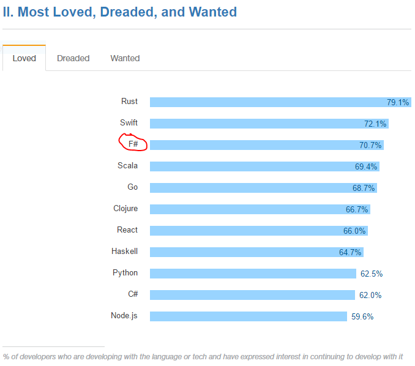
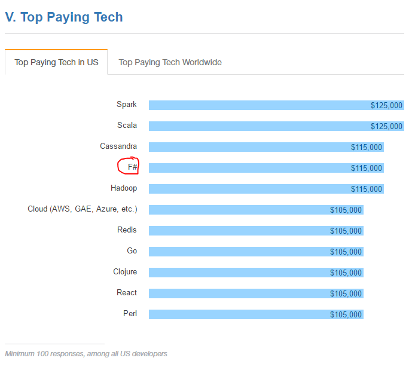
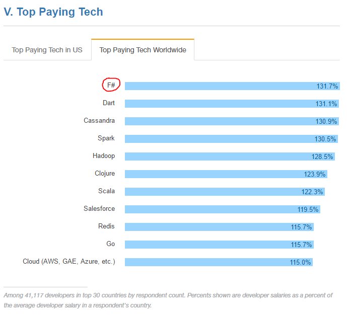

namespace System
val printfn : format:Printf.TextWriterFormat<'T> -> 'T
Full name: Microsoft.FSharp.Core.ExtraTopLevelOperators.printfn
Full name: Microsoft.FSharp.Core.ExtraTopLevelOperators.printfn
Multiple items
val string : value:'T -> string
Full name: Microsoft.FSharp.Core.Operators.string
--------------------
type string = System.String
Full name: Microsoft.FSharp.Core.string
val string : value:'T -> string
Full name: Microsoft.FSharp.Core.Operators.string
--------------------
type string = System.String
Full name: Microsoft.FSharp.Core.string
Multiple items
val int : value:'T -> int (requires member op_Explicit)
Full name: Microsoft.FSharp.Core.Operators.int
--------------------
type int = int32
Full name: Microsoft.FSharp.Core.int
--------------------
type int<'Measure> = int
Full name: Microsoft.FSharp.Core.int<_>
val int : value:'T -> int (requires member op_Explicit)
Full name: Microsoft.FSharp.Core.Operators.int
--------------------
type int = int32
Full name: Microsoft.FSharp.Core.int
--------------------
type int<'Measure> = int
Full name: Microsoft.FSharp.Core.int<_>
module Option
from Microsoft.FSharp.Core
from Microsoft.FSharp.Core
union case Option.Some: Value: 'T -> Option<'T>
union case Option.None: Option<'T>
F# Functional Programming
Michał Grygierzec
Agenda
- FP in Software Industry
- History
- Motivation
- Concepts
- Insights
- Demo
Functional Programming in software Industry


Functional Programming History
- 1950s - Lisp by John McCarthy (MIT)
- 1960s - APL by Kenneth E. Iverson (Harvard)
- 1970s - ML by Robin Milner (University of Edinburgh)
- 1986 - Erlang
- 1990 - Haskell
- 1996 - OCaml
- 2004 - Scala
- 2005 - F# by Don Syme
- 2007 - Clojure
- 2012 - Elm
- 2014 - Swift
F# History
- 2005 - first stable release (F# 1.0)
- Don Syme - language designer
- Open Source (since 2010)
- Cross-platform
- fsharp.org - F# official page
My Motivation
- Broaden horizons
- Productivity
- Safety
- Reliability
- Robustness
- Joy
- Peace
Alan Perlis: a language that doesn't affect the way you think about programming, is not worth knowing.
F# Overview
- Functional
- Imperative
- Object-Oriented
- Asynchronous
- Parallel
- Agent model
Type inference
A mechanism used by compiler to deduce what types are used in expressions in a program.
Type inference
1: 2: 3: 4: 5: 6: |
|
Type inference - explicit annotations
1: 2: 3: 4: |
|
Immutability
- no side-effects
- no mutation of a state
- no modifications of other parts of a program
Immutability
1: 2: 3: |
|
Currying
... means transforming a function with many arguments,
into a series of functions,
each with only one argument.
All functions in F# are auto-curried by compiler.
Currying
1: 2: 3: 4: 5: 6: 7: 8: |
|
Partial Application
... means passing to function less arguments
than it originally accepts.
As a result function returns another function,
which accepts remaining parameters.
Partial Application
1: 2: 3: 4: 5: |
|
Higher Order Functions
Functions which:
accept another function as an input,
or return function as an output.
Higher Order Functions
1: 2: 3: 4: 5: 6: |
|
Pattern Matching
Pattern Matching I
1: 2: |
|
Pattern Matching II
1: 2: |
|
Pattern Matching III
1: 2: 3: 4: 5: 6: |
|
Structure Equality
1: 2: 3: 4: 5: 6: 7: 8: 9: 10: |
|
Option Type
It is a union of two cases:
- Data is present
- Data is missing
Option Type
1: 2: 3: |
|
Option Type
1: 2: 3: 4: |
|
F# Vital Statistics
by

F# Vital Statistics - Most Loved

F# Vital Statistics - Top Paying Tech US

F# Vital Statistics - Top Paying Tech Worldwide

Resources
- http://fsharp.org - official site
- http://fsharpforfunandprofit.com - F# for Fun and Profit by S. Wlaschin
- https://sergeytihon.wordpress.com - F# Weekly
- http://tomasp.net - Tomas Petricek blog
- http://evelinag.com - Evelina Gabasova blog (ML)
- http://mbrace.io - Cloud Computing
- http://fslab.org - Machine Learning
Summary - F#
- multi-paradigm (FP, OO)
- flexible
- powerful
- functional-first
Summary - F# code
- concise
- clean
- robust
- safe
- expressive
- reusable
- maintainable